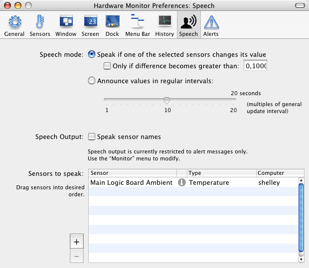

Working with speech output |
The monitor application can optionally use acoustical speech output to announce readings. You can select between two different modes of operation:
In both cases spech output will read out all sensor values that have been activated in the table below. Selecting the desired sensors is done by the Speech mode buttons in the pane Speech of the preferences window. By checking the field Speak sensor names, not only the readings but also the sensor locations will be announced, as you have defined them in the Sensors pane.

Values will be read out without any units. Voice and other characteristics of speech output can be set with the pane Speech in System Preferences.
To define which are the talking sensors, use the table in the lower half of the window. The table can be used the same way as discussed earlier.
You should avoid to set the time interval for speech output too short or the number of talking sensors too high. In these cases, the next announcement might begin while the current speech output is not finished yet. Speech output will continuously interrupt itself and you won't be able to understand anything.
If desired, speech output can be completely disabled or enabled without having to change individual speech settings. When launching the monitor application for the first time, speech output will be disabled by default. You can change this using the Monitor menu: